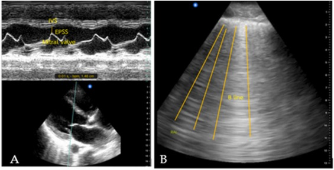

Conteúdo médico complexo quebrado em unidades pequenas, acionáveis e
conectadas. Você observa, decide, recebe feedback e retoma no momento
certo — com pouco atrito e alta densidade clínica.
⚠️ POCUS é extensão do exame clínico.
Não substitui ABCDE, estabilização, exames formais, protocolo local
nem julgamento individual. Nunca conclua por um sinal isolado.
ATLAS REAL · TURBO TEMI · CC BY 4.0
Veja o ultrassom. Descreva antes de diagnosticar.
Quatro exemplos reais e desidentificados, preservados do artigo-fonte.
Cada card separa observação, interpretação segura, armadilha e próximo passo.
🔬 Pixels clínicos reais — sem geração ou retoque por IA.
As marcações amarelas já pertencem às figuras publicadas. A camada
Turbo TEMI abaixo foi criada no site e permanece fora da imagem.
USG REAL · FIG. 1CHOQUE CARDIOGÊNICO

A · contração reduzida do VE e avaliação por EPSS. B · múltiplas linhas B.
🪟 JANELA
Cardíaca paraesternal + pulmão em modo B.
👁️ VEJA
Menor excursão global do VE/EPSS aumentado e artefatos verticais múltiplos alcançando o fundo da tela.
🧠 INTERPRETE
O conjunto apoia disfunção sistólica do VE associada a síndrome intersticial; no artigo, representa fenótipo cardiogênico.
⚠️ ARMADILHA
Linhas B não são específicas de edema cardiogênico; EPSS é estimativa indireta e sofre influência de valvopatias e geometria ventricular.
➡️ PRÓXIMO PASSO
Integre valvas, VD, pericárdio, distribuição pulmonar, perfusão e exame seriado; solicite ecocardiograma formal quando indicado.
Limite educacional: imagens representativas não substituem
aquisição dinâmica, controle de qualidade, integração hemodinâmica nem
supervisão por profissional competente.
Imagem conceitual original gerada pelo motor visual GPT e revisada
para esta sessão. Não representa janela ultrassonográfica real,
diagnóstico ou orientação terapêutica.
MAPA ALEGÓRICO GPT · NÃO DIAGNÓSTICO
Uma imagem, cinco perguntas
O transdutor é o centro do ciclo; os cinco domínios organizam a
busca sem transformar o desenho em regra clínica.
1 · BombaVE, VD e pericárdio
2 · Tanquecongestão e dinâmica
3 · Tubosaorta e território venoso
4 · Pulmãopleura e aeração
5 · Perfusãoresposta e reavaliação
🔒 Como a imagem entra no site com segurança
O motor visual GPT gera durante a edição, fora do navegador público.
A imagem é inspecionada, otimizada, versionada e recebe proveniência.
O site publica só o arquivo estático após testes, gate e revisão Git.
Nenhuma chave, chamada de geração ou dado de paciente é enviado pelo site.
COMO FUNCIONA
Metodologia ACRA microparticulada
Cada partícula tem começo e fim claros: uma pergunta, uma ação
cognitiva, uma evidência, um limite e um próximo passo.
M0Essência30 segundos
M1Mecanismoentender
M2Decisõescomparar
M3Aplicaçãofazer
M4Armadilhasdesancorar
M5Recordaçãorecuperar
M6Retomadaconsolidar
🧩
Microparticulado
Reduz a carga de entrada: um alvo por vez, sem perder a conexão com
o quadro completo.
🖐️
Ativo
Você precisa prever, escolher, comparar ou explicar antes de
receber o comentário.
🔁
Iterativo
Erros viram alvos de revisão; a retomada em 24 h, 7 d e 30 d
combate o esquecimento.
🧱
Contrato ACRA
O conteúdo usa o schema fechado nexus-artifact v1.0,
com componentes permitidos, fontes e ações apenas em prévia.
ATALHO DE PLANTÃO
Precisa começar sem pensar?
Ative o modo foco: ele abre a essência e leva direto ao checklist.
ARTEFATO DIDÁTICO INTERATIVO
Piloto · POCUS no choque
Caso sintético, recuperação ativa e progresso local. Os comentários
das questões só aparecem depois da resposta.